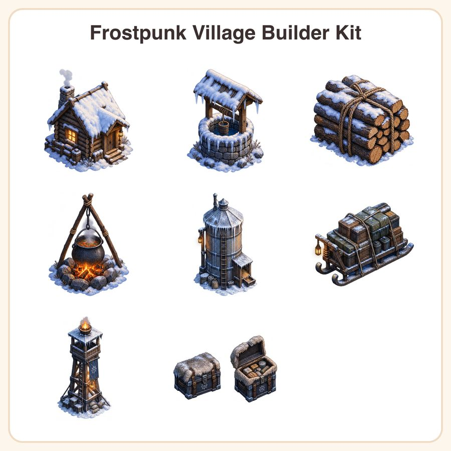

$6.99
View on EtsyShip your winter survival demo faster with a ready-made frozen village icon set — no need to commission custom art from scratch. What's included (8 unique icons, 9 total transparent PNGs): • Snow-covered log cabin with glowing window • Stone well with icicles hanging from the rim • Stack of firewood bundled with rope • Iron cauldron over a small campfire • Frozen wheat silo with frost texture overlay • Sled loaded with supply crates • Watchtower with a lit brazier on top • Fur-trimmed ration chest — closed and open variants (2 files, same icon) File formats & sizes: • 9 transparent PNG sprites total, each provided at 1024px and 512px (18 files total) • 1 preview sheet (JPG) showing all icons at a glance • Delivered as a zipped download Style notes: painterly, pixel-adjacent shading in soft blue-grey tones with warm lantern-light highlights, consistent 45-degree isometric lighting across all pieces for a cohesive look in your builder or survival game. How to use: drop straight into Unity, Godot, GameMaker, or any engine that supports transparent PNGs. Great for tile-based builders, UI icons, or crafting menus. License: personal and small-business commercial use included — use these assets in up to 500 units of your finished game or product. Please don't resell, redistribute, or repackage the files themselves as assets for others. Honest disclosure: these icons were designed by our small shop with the help of AI image tools, then reviewed and refined for consistency before release.